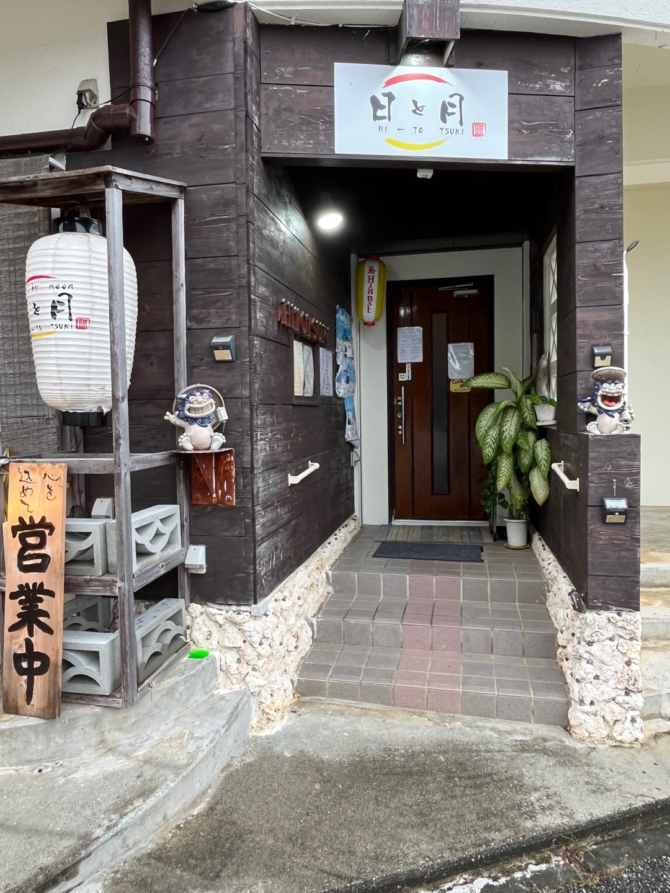
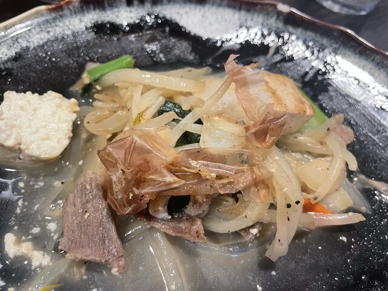
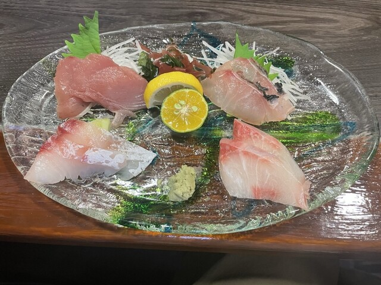
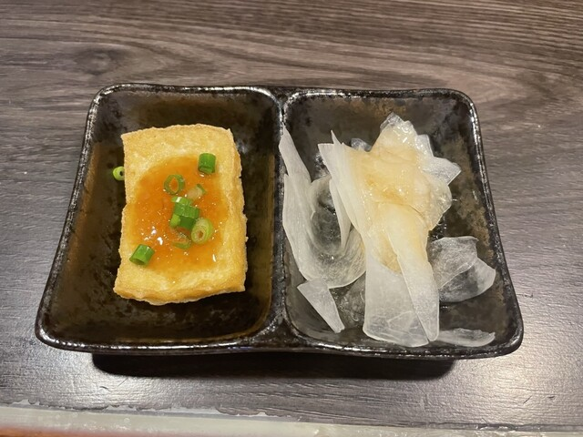
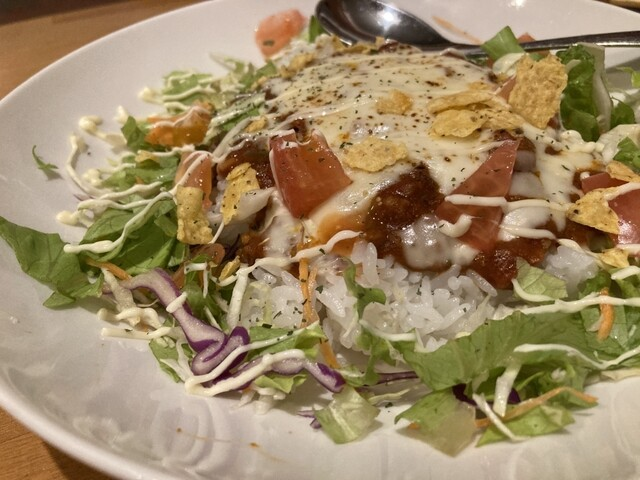
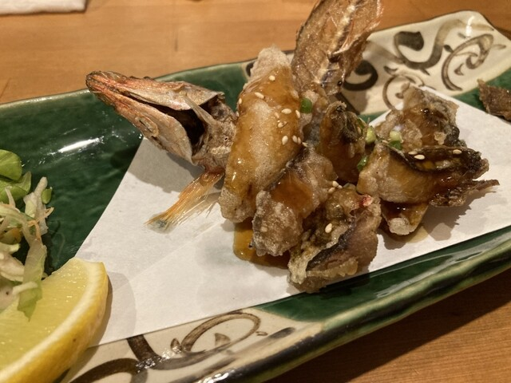
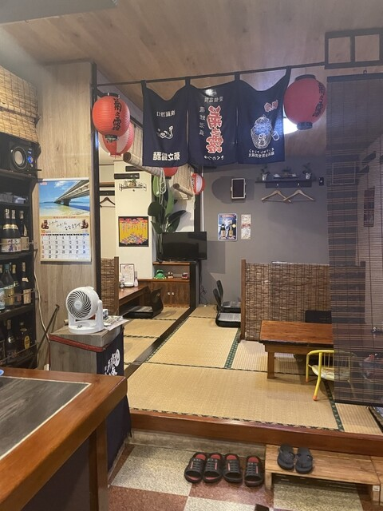
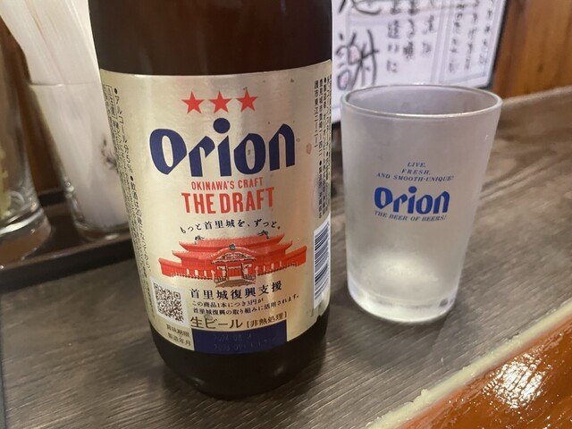

An Island Evening島の夜に、もうひとつの楽しみ
Hitotsuki日と月（ひとつき）
After the beach, a place to settle in.海を楽しんだあとは、ゆっくり島の夜ごはんを。
Call for a Table電話で予約を相談A different side of an island day海辺の一日の続きに、居酒屋の時間を。
A day on Miyakojima does not have to end when you leave the beach. In Hirara's Shimozato neighbourhood, near Painagama Beach, Hitotsuki offers another way to spend the evening: sitting down for dinner at a local izakaya.
ビーチを離れてからも、宮古島の一日は続きます。パイナガマビーチに近い平良下里の居酒屋「日と月」。海辺を歩いたあとの夜に、お食事を楽しむ場所として覚えておきたい一軒です。
The name is read “Hitotsuki.” Its location makes it worth considering when planning dinner around the Painagama area. Check the current menu, then call ahead to ask about a table, your group's needs and anything you would like to know before visiting.
店名の読み方は「ひとつき」。パイナガマ周辺で夜ごはんを考えるときに、候補に加えたいお店です。最新のメニューを確認し、お席や人数、お食事のご希望などは事前にお電話でご相談ください。
Why My Miyakojima Recommends ItMy Miyakojimaがおすすめする理由
We want the guide to include the everyday places that make an island visit feel more personal, not only its big sights. An evening meal near the beach can be part of that: a little time to sit down, talk and enjoy being here.
有名な景色だけでなく、旅の時間を少し身近にしてくれる場所も紹介したい。海の近くで席に着き、話をしながら夜ごはんを楽しむことも、島で過ごす大切なひとときだと考えています。
Food & the Front Doorお料理と、お店の入口







Photos show dishes and the entrance at the time photographed. Menus and availability may change.写真は撮影時のお料理と入口の様子です。メニューや提供状況は変更になる場合があります。
Choose the evening that suits youその日の気分に合う、夜ごはんを。
Explore the food photos on this page, or ask My Miyakojima a question about the guide. Menus, prices and dietary requirements should still be confirmed directly with the restaurant.
お料理やドリンクの写真は、このページでご覧いただけます。ガイドについてのご質問はMy Miyakojimaへどうぞ。メニューや価格、アレルギー・食事制限については、お店へ直接ご確認ください。
A few things to knowお出かけ前に
- Published hours掲載の営業時間
- Monday–Saturday, 18:00–23:00. Closed Sundays.月〜土 18:00〜23:00／日曜定休
- Reservationsご予約
- Call the restaurant to confirm availability.お席の空き状況はお電話でご確認ください。
- Payment & access needsお支払い・ご利用について
- Confirm accepted payment methods, parking and language support directly.お支払い方法、駐車場、対応言語は直接ご確認ください。
Hours are based on the linked listing and may change. Please confirm before travelling.営業時間はリンク先の掲載情報をもとにしています。変更の場合がありますので、ご来店前にご確認ください。
Find Hitotsuki日と月のご予約・アクセス
Beachside Mansion 1F, 401-5 Shimozato, Hirara, Miyakojima, Okinawa沖縄県宮古島市平良下里401-5 ビーチサイドマンション1F